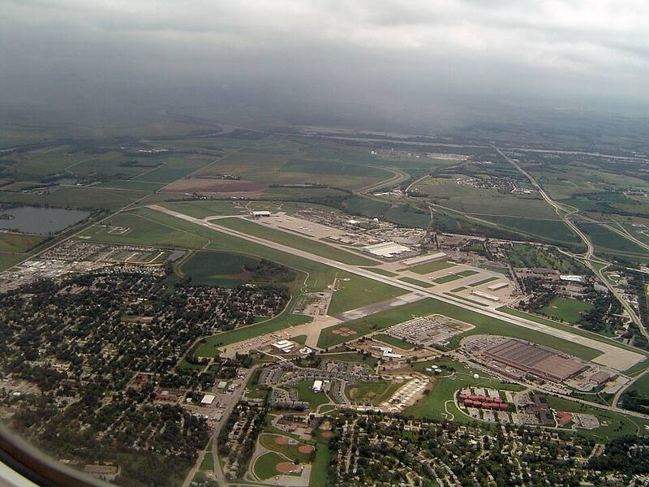

Offutt AFB Nebraska Nebraska · Military base · 41.117°N, 95.913°W Offutt Air Force Base from an airliner on approach to Omaha. Photo: Code36, Public domain (source) Headquarters of U.S. Strategic Command. 1 Open in the interactive Watcher Sources Offutt Air Force Base Wikipedia